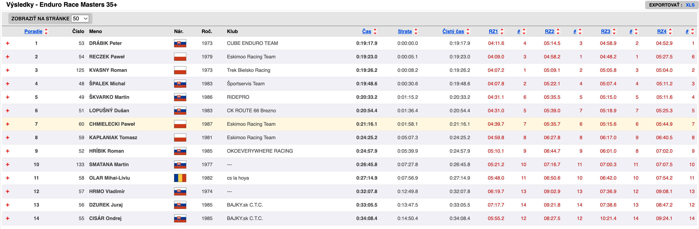

Zablatený víkend, ale stálo to za to. Bol to motokros s množstvom pádov a veľmi náročným terénom. Jazdia sa tri trate - RS2 a RS4 sa jazdia na tej istej trati, pričom RS4 ide iba Race kategória.
Full report na biker.sk.
Galéria
Fotky z preteku


Výsledkové listiny
RACE Masters 35+

Video